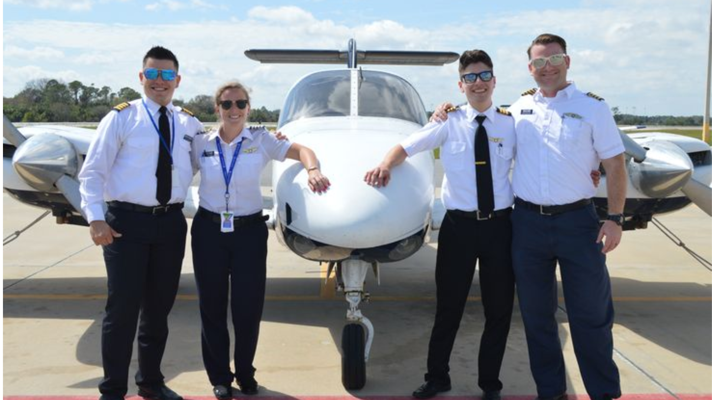

О нашей компании
Future Pilot — казахстанская компания, специализирующаяся на подготовке кандидатов, желающих стать пилотами. Мы предоставляем комплексные образовательные ресурсы и тестовые экзамены, помогающие пройти отбор в программу Ab Initio от Air Astana, а также подготовиться к другим необходимым испытаниям для пилотов.
Наш сайт — это уникальная платформа, разработанная специально для того, чтобы каждый студент или кандидат смог:
- Получить подробную информацию о программе Ab Initio и процессе отбора в Air Astana;
- Ознакомиться с требованиями и этапами вступительных испытаний;
- Пройти тестовые экзамены, аналогичные реальным экзаменам в процессе отбора;
- Подготовиться к каждому этапу благодаря нашим авторским тестам, созданным на основе официальных материалов.
Мы являемся единственной компанией в Казахстане, предоставляющей такую подготовку, и стремимся дать каждому кандидату равные возможности для достижения своей мечты — стать пилотом.

Информационная деятельность
Помимо образовательных материалов, Future Pilot ведет активную информационную деятельность. Мы поддерживаем новостной блог, а также развиваем YouTube и Instagram-каналы, где публикуем:
- Подробные разборы программ подготовки пилотов;
- Интервью с профессиональными пилотами и инструкторами;
- Советы и рекомендации по подготовке к экзаменам;
- Истории успешных кандидатов.

Наши YouTube и Instagram-каналы предлагают множество материалов для успешной подготовки к программе Ab Initio!
Наши преимущества
Мы предлагаем уникальные возможности для каждого кандидата:
- Индивидуальные консультации по каждому этапу отбора;
- Поддержка экспертов с опытом работы в авиации;
- Доступ к закрытым материалам и пробным тестам;
- Актуальные новости и обновления от Air Astana.

Отзывы наших учеников
Мы верим, что каждый человек, мечтающий о карьере пилота, должен иметь доступ к качественной подготовке. Именно поэтому Future Pilot делает все возможное, чтобы создать максимально удобные и эффективные условия для подготовки будущих авиаторов.
Сотни успешных кандидатов уже прошли подготовку с Future Pilot и смогли осуществить свою мечту!
«Благодаря Future Pilot я сдал все этапы тестирования и поступил в программу Ab Initio! Отличные материалы и поддержка!» — Айбек К.
«Все тесты и тренировки были максимально похожи на реальные экзамены, что помогло мне справиться с волнением и успешно пройти отбор.» — Динара Ж.